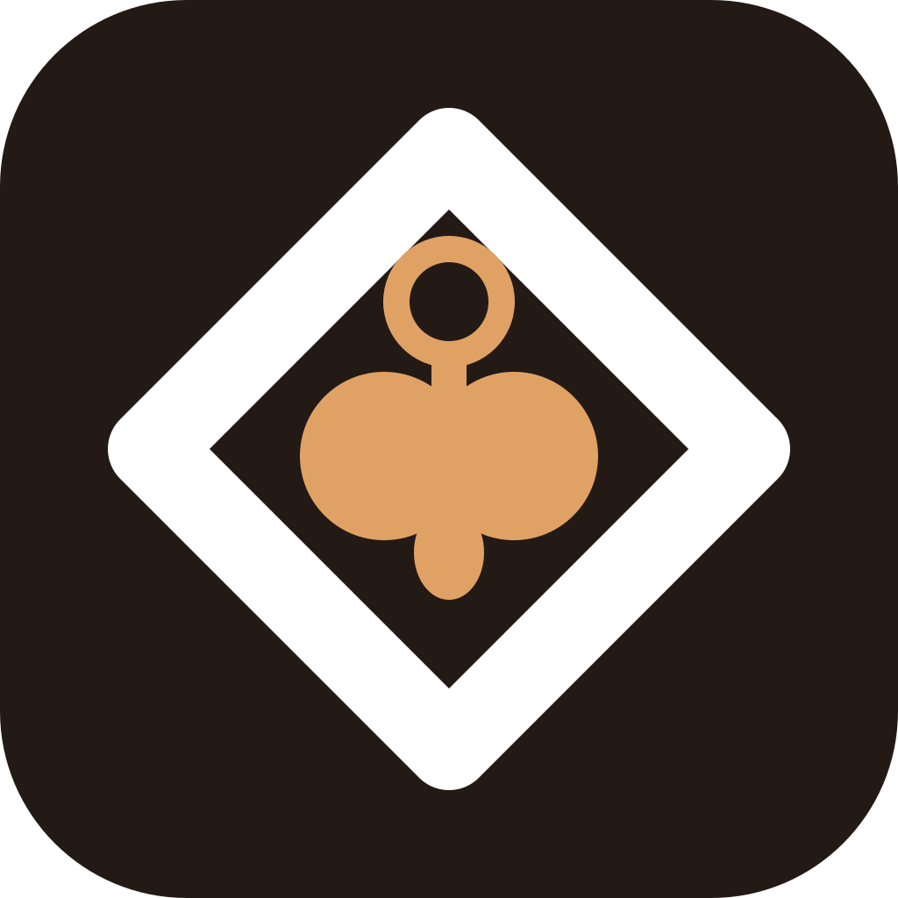
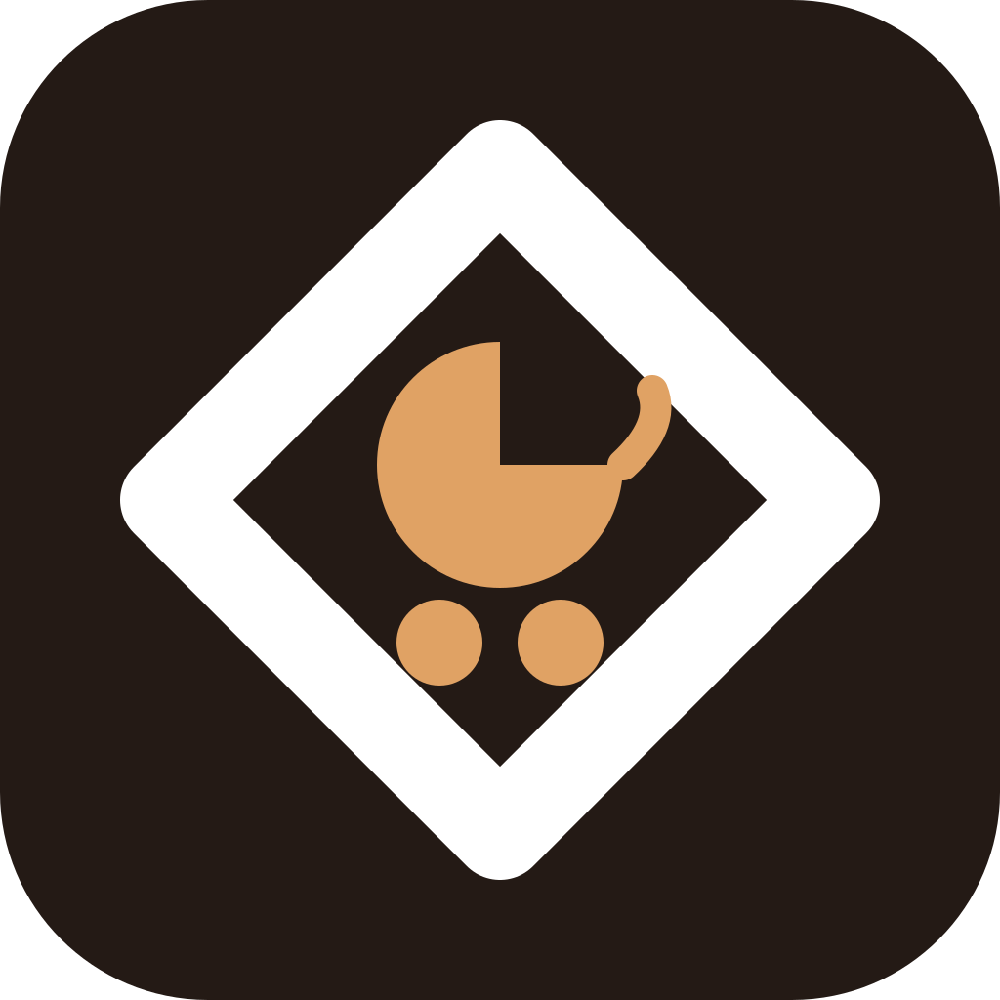
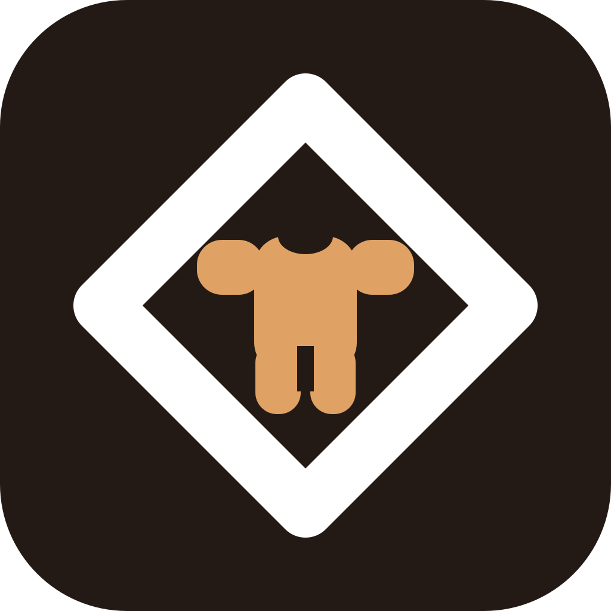
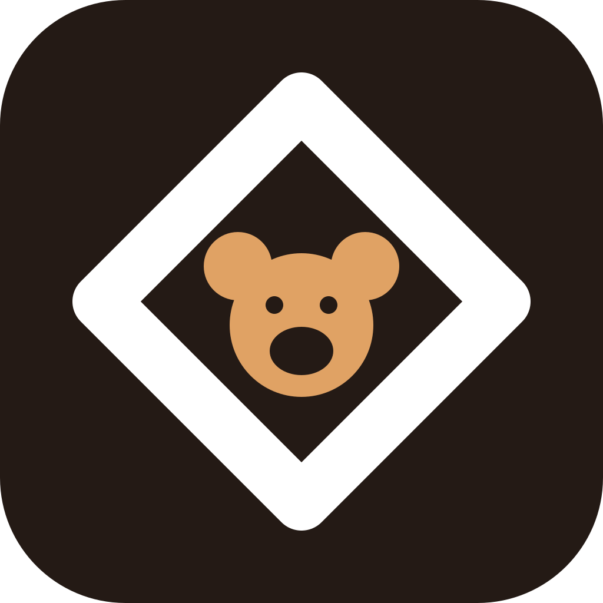
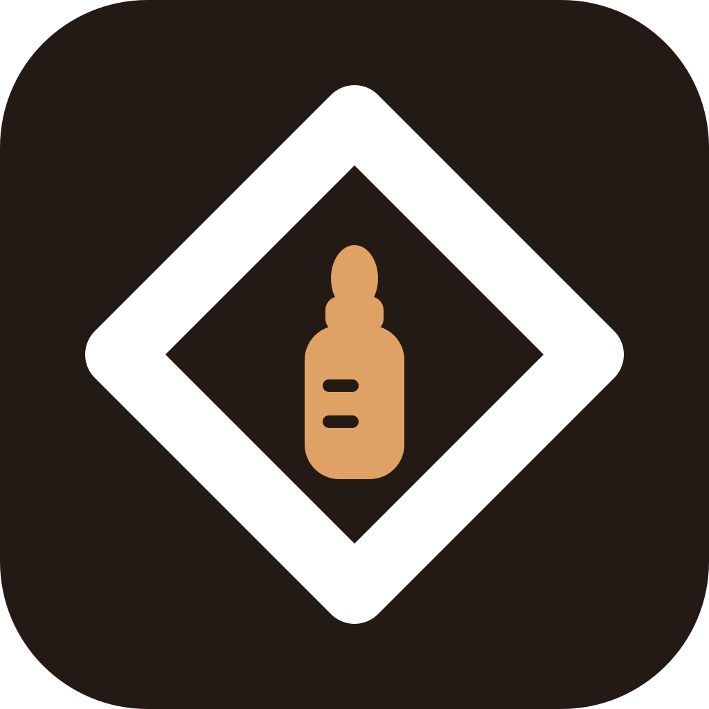

F · Соска
Кольцо, плоский щиток, сосок. Самый однозначный «детский» предмет — читается мгновенно.

G · Коляска
Капюшон, люлька, два колеса. Ясная метафора и хорошо держит мелкий размер за счёт крупных пятен.

H · Боди
Ползунки с рукавами. Вещь, а не персонаж: без сюсюканья, но безошибочно про младенца.

I · Мишка
Голова с ушами, мордочка вырезана фоном. Самая узнаваемая форма набора, работает даже крошечной.

J · Ножки
Два следа младенца. Прямее некуда, но пальчики в 28 px превращаются в крапинки.

K · Бутылочка
Соска, горлышко, мерные риски. Перекликается с вкладкой «Ритм» — кормления по часам.